Home.首頁
Portfolio.作品
Daily.日誌
Contact.簡介

羅傑
Who?
我是誰?
我是羅傑，一個熱愛遊戲開發、喜歡探究新事物、喜歡研究各種遊戲內，設計的系統，在大學四年裡，充分利用自己擅長的電腦工具 ，學到了不少，也經常自學，也投入在遊戲引擎上不少的時間。日常喜歡打球，吃美味食物的BOY。
Why?
為何做這個網站?
網站是利用Bootstrap構建，快畢業前想要架設自己的網站所設計的。過程中，不僅結合了大二所學的前端語言，更融會四年來的美學觀念。網站核心是以5W1H為基底設計。
What?
是什麼讓我選擇走遊戲這條道路?
網站是利用Bootstrap構建，快畢業前想要架設自己的網站所設計的。過程中，不僅結合了大二所學的前端語言，更融會四年來的美學觀念。網站核心是以5W1H為基底設計。
When?
我是誰?
網站是利用Bootstrap構建，快畢業前想要架設自己的網站所設計的。過程中，不僅結合了大二所學的前端語言，更融會四年來的美學觀念。網站核心是以5W1H為基底設計。
Where?
我是誰?
網站是利用Bootstrap構建，快畢業前想要架設自己的網站所設計的。過程中，不僅結合了大二所學的前端語言，更融會四年來的美學觀念。網站核心是以5W1H為基底設計。
How?
我是誰?
網站是利用Bootstrap構建，快畢業前想要架設自己的網站所設計的。過程中，不僅結合了大二所學的前端語言，更融會四年來的美學觀念。網站核心是以5W1H為基底設計。